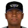
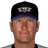

Franchise record book · FBL
Louisville Bats
Seasons covered: 2002–2002. Only games played for this franchise count.
This club has no pre-2002 history in the export, so its record book is the 2002 season to date. Rate records need 3.1 PA or 1 inning per team game.
Home runs
| # | Player | Season | Team | Home runs |
|---|---|---|---|---|
| #1 | 2002 (FBL) |  Louisville Bats Louisville Bats | 9 | |
| #2 | 2002 (FBL) | Louisville Bats | 8 | |
| #3 | 2002 (FBL) | Louisville Bats | 8 | |
| #4 | 2002 (FBL) | Louisville Bats | 6 | |
| #5 | 2002 (FBL) | Louisville Bats | 5 | |
| #6 | 2002 (FBL) | Louisville Bats | 2 | |
| #7 | 2002 (FBL) | Louisville Bats | 2 | |
| #8 | 2002 (FBL) | Louisville Bats | 2 | |
| #9 | 2002 (FBL) | Louisville Bats | 1 | |
| #10 | 2002 (FBL) | Louisville Bats | 1 |
Hits
| # | Player | Season | Team | Hits |
|---|---|---|---|---|
| #1 | 2002 (FBL) | Louisville Bats | 50 | |
| #2 | 2002 (FBL) | Louisville Bats | 47 | |
| #3 | 2002 (FBL) | Louisville Bats | 46 | |
| #4 | 2002 (FBL) | Louisville Bats | 46 | |
| #5 | 2002 (FBL) | Louisville Bats | 40 | |
| #6 | 2002 (FBL) | Louisville Bats | 39 | |
| #7 | Joe McEwing • | 2002 (FBL) | Louisville Bats | 36 |
| #8 | 2002 (FBL) | Louisville Bats | 32 | |
| #9 | 2002 (FBL) | Louisville Bats | 30 | |
| #10 |  Al Martin • | 2002 (FBL) | Louisville Bats | 18 |
RBI
| # | Player | Season | Team | RBI |
|---|---|---|---|---|
| #1 | 2002 (FBL) | Louisville Bats | 32 | |
| #2 | 2002 (FBL) | Louisville Bats | 30 | |
| #3 | 2002 (FBL) | Louisville Bats | 26 | |
| #4 | 2002 (FBL) | Louisville Bats | 20 | |
| #5 | 2002 (FBL) | Louisville Bats | 19 | |
| #6 | 2002 (FBL) | Louisville Bats | 17 | |
| #7 | 2002 (FBL) | Louisville Bats | 17 | |
| #8 | Joe McEwing • | 2002 (FBL) | Louisville Bats | 14 |
| #9 | 2002 (FBL) | Louisville Bats | 11 | |
| #10 | Al Martin • | 2002 (FBL) | Louisville Bats | 8 |
Runs
| # | Player | Season | Team | Runs |
|---|---|---|---|---|
| #1 | 2002 (FBL) | Louisville Bats | 31 | |
| #2 | 2002 (FBL) | Louisville Bats | 25 | |
| #3 | 2002 (FBL) | Louisville Bats | 25 | |
| #4 | 2002 (FBL) | Louisville Bats | 25 | |
| #5 | 2002 (FBL) | Louisville Bats | 22 | |
| #6 | 2002 (FBL) | Louisville Bats | 22 | |
| #7 | 2002 (FBL) | Louisville Bats | 16 | |
| #8 | Joe McEwing • | 2002 (FBL) | Louisville Bats | 15 |
| #9 | 2002 (FBL) | Louisville Bats | 13 | |
| #10 | Al Martin • | 2002 (FBL) | Louisville Bats | 10 |
Stolen bases
| # | Player | Season | Team | Stolen bases |
|---|---|---|---|---|
| #1 | 2002 (FBL) | Louisville Bats | 6 | |
| #2 | 2002 (FBL) | Louisville Bats | 6 | |
| #3 | 2002 (FBL) | Louisville Bats | 5 | |
| #4 | Joe McEwing • | 2002 (FBL) | Louisville Bats | 5 |
| #5 | 2002 (FBL) | Louisville Bats | 4 | |
| #6 | Al Martin • | 2002 (FBL) | Louisville Bats | 3 |
| #7 | 2002 (FBL) | Louisville Bats | 3 | |
| #8 | 2002 (FBL) | Louisville Bats | 1 | |
| #9 | 2002 (FBL) | Louisville Bats | 1 | |
| #10 | 2002 (FBL) | Louisville Bats | 0 |
Doubles
| # | Player | Season | Team | Doubles |
|---|---|---|---|---|
| #1 | 2002 (FBL) | Louisville Bats | 16 | |
| #2 | 2002 (FBL) | Louisville Bats | 10 | |
| #3 | 2002 (FBL) | Louisville Bats | 9 | |
| #4 | Joe McEwing • | 2002 (FBL) | Louisville Bats | 8 |
| #5 | 2002 (FBL) | Louisville Bats | 7 | |
| #6 | 2002 (FBL) | Louisville Bats | 6 | |
| #7 | 2002 (FBL) | Louisville Bats | 5 | |
| #8 | Al Martin • | 2002 (FBL) | Louisville Bats | 5 |
| #9 | 2002 (FBL) | Louisville Bats | 4 | |
| #10 | 2002 (FBL) | Louisville Bats | 4 |
Triples
| # | Player | Season | Team | Triples |
|---|---|---|---|---|
| #1 | 2002 (FBL) | Louisville Bats | 2 | |
| #2 | 2002 (FBL) | Louisville Bats | 2 | |
| #3 | 2002 (FBL) | Louisville Bats | 2 | |
| #4 | 2002 (FBL) | Louisville Bats | 2 | |
| #5 | 2002 (FBL) | Louisville Bats | 2 | |
| #6 | 2002 (FBL) | Louisville Bats | 1 | |
| #7 | 2002 (FBL) | Louisville Bats | 0 | |
| #8 | 2002 (FBL) | Louisville Bats | 0 | |
| #9 | 2002 (FBL) | Louisville Bats | 0 | |
| #10 | 2002 (FBL) | Louisville Bats | 0 |
Walks
| # | Player | Season | Team | Walks |
|---|---|---|---|---|
| #1 | 2002 (FBL) | Louisville Bats | 23 | |
| #2 | 2002 (FBL) | Louisville Bats | 23 | |
| #3 | 2002 (FBL) | Louisville Bats | 21 | |
| #4 | 2002 (FBL) | Louisville Bats | 16 | |
| #5 | 2002 (FBL) | Louisville Bats | 11 | |
| #6 | 2002 (FBL) | Louisville Bats | 10 | |
| #7 | 2002 (FBL) | Louisville Bats | 8 | |
| #8 | 2002 (FBL) | Louisville Bats | 8 | |
| #9 | Joe McEwing • | 2002 (FBL) | Louisville Bats | 6 |
| #10 | Al Martin • | 2002 (FBL) | Louisville Bats | 4 |
Total bases
| # | Player | Season | Team | Total bases |
|---|---|---|---|---|
| #1 | 2002 (FBL) | Louisville Bats | 81 | |
| #2 | 2002 (FBL) | Louisville Bats | 76 | |
| #3 | 2002 (FBL) | Louisville Bats | 74 | |
| #4 | 2002 (FBL) | Louisville Bats | 73 | |
| #5 | 2002 (FBL) | Louisville Bats | 64 | |
| #6 | 2002 (FBL) | Louisville Bats | 61 | |
| #7 | 2002 (FBL) | Louisville Bats | 59 | |
| #8 | 2002 (FBL) | Louisville Bats | 49 | |
| #9 | Joe McEwing • | 2002 (FBL) | Louisville Bats | 47 |
| #10 | Al Martin • | 2002 (FBL) | Louisville Bats | 26 |
Batting average qualified
| # | Player | Season | Team | Batting average |
|---|---|---|---|---|
| #1 | 2002 (FBL) | Louisville Bats | .365 | |
| #2 | 2002 (FBL) | Louisville Bats | .307 | |
| #3 | 2002 (FBL) | Louisville Bats | .305 | |
| #4 | 2002 (FBL) | Louisville Bats | .297 | |
| #5 | 2002 (FBL) | Louisville Bats | .276 | |
| #6 | 2002 (FBL) | Louisville Bats | .275 | |
| #7 | 2002 (FBL) | Louisville Bats | .275 | |
| #8 | Joe McEwing • | 2002 (FBL) | Louisville Bats | .273 |
| #9 | 2002 (FBL) | Louisville Bats | .215 |
On-base % qualified
| # | Player | Season | Team | On-base % |
|---|---|---|---|---|
| #1 | 2002 (FBL) | Louisville Bats | .397 | |
| #2 | 2002 (FBL) | Louisville Bats | .397 | |
| #3 | 2002 (FBL) | Louisville Bats | .392 | |
| #4 | 2002 (FBL) | Louisville Bats | .373 | |
| #5 | 2002 (FBL) | Louisville Bats | .356 | |
| #6 | 2002 (FBL) | Louisville Bats | .325 | |
| #7 | 2002 (FBL) | Louisville Bats | .318 | |
| #8 | 2002 (FBL) | Louisville Bats | .312 | |
| #9 | Joe McEwing • | 2002 (FBL) | Louisville Bats | .309 |
Slugging % qualified
| # | Player | Season | Team | Slugging % |
|---|---|---|---|---|
| #1 | 2002 (FBL) | Louisville Bats | .555 | |
| #2 | 2002 (FBL) | Louisville Bats | .540 | |
| #3 | 2002 (FBL) | Louisville Bats | .514 | |
| #4 | 2002 (FBL) | Louisville Bats | .490 | |
| #5 | 2002 (FBL) | Louisville Bats | .450 | |
| #6 | 2002 (FBL) | Louisville Bats | .430 | |
| #7 | 2002 (FBL) | Louisville Bats | .407 | |
| #8 | 2002 (FBL) | Louisville Bats | .386 | |
| #9 | Joe McEwing • | 2002 (FBL) | Louisville Bats | .356 |
OPS qualified
| # | Player | Season | Team | OPS |
|---|---|---|---|---|
| #1 | 2002 (FBL) | Louisville Bats | .952 | |
| #2 | 2002 (FBL) | Louisville Bats | .913 | |
| #3 | 2002 (FBL) | Louisville Bats | .882 | |
| #4 | 2002 (FBL) | Louisville Bats | .846 | |
| #5 | 2002 (FBL) | Louisville Bats | .826 | |
| #6 | 2002 (FBL) | Louisville Bats | .747 | |
| #7 | 2002 (FBL) | Louisville Bats | .742 | |
| #8 | 2002 (FBL) | Louisville Bats | .732 | |
| #9 | Joe McEwing • | 2002 (FBL) | Louisville Bats | .665 |
WAR (OOTP)
| # | Player | Season | Team | WAR (OOTP) |
|---|---|---|---|---|
| #1 | 2002 (FBL) | Louisville Bats | 2.0 | |
| #2 | 2002 (FBL) | Louisville Bats | 1.2 | |
| #3 | 2002 (FBL) | Louisville Bats | 1.1 | |
| #4 | 2002 (FBL) | Louisville Bats | 0.7 | |
| #5 | 2002 (FBL) | Louisville Bats | 0.7 | |
| #6 | 2002 (FBL) | Louisville Bats | 0.7 | |
| #7 | Al Martin • | 2002 (FBL) | Louisville Bats | 0.6 |
| #8 | 2002 (FBL) | Louisville Bats | 0.3 | |
| #9 | Joe McEwing • | 2002 (FBL) | Louisville Bats | 0.1 |
| #10 | 2002 (FBL) | Louisville Bats | 0.1 |
Wins
| # | Player | Season | Team | Wins |
|---|---|---|---|---|
| #1 | 2002 (FBL) | Louisville Bats | 4 | |
| #2 | 2002 (FBL) | Louisville Bats | 3 | |
| #3 | John Dillinger • | 2002 (FBL) | Louisville Bats | 3 |
| #4 | 2002 (FBL) | Louisville Bats | 2 | |
| #5 | 2002 (FBL) | Louisville Bats | 2 | |
| #6 | 2002 (FBL) | Louisville Bats | 2 | |
| #7 | Rich Croushore • | 2002 (FBL) | Louisville Bats | 2 |
| #8 | John Parrish • | 2002 (FBL) | Louisville Bats | 2 |
| #9 | 2002 (FBL) | Louisville Bats | 1 | |
| #10 |  Jason Grimsley • | 2002 (FBL) | Louisville Bats | 1 |
Strikeouts
| # | Player | Season | Team | Strikeouts |
|---|---|---|---|---|
| #1 | 2002 (FBL) | Louisville Bats | 75 | |
| #2 | 2002 (FBL) | Louisville Bats | 40 | |
| #3 | 2002 (FBL) | Louisville Bats | 24 | |
| #4 | 2002 (FBL) | Louisville Bats | 21 | |
| #5 | John Dillinger • | 2002 (FBL) | Louisville Bats | 21 |
| #6 | John Parrish • | 2002 (FBL) | Louisville Bats | 18 |
| #7 | 2002 (FBL) | Louisville Bats | 18 | |
| #8 | Rich Croushore • | 2002 (FBL) | Louisville Bats | 14 |
| #9 | Jason Grimsley • | 2002 (FBL) | Louisville Bats | 10 |
| #10 | 2002 (FBL) | Louisville Bats | 7 |
Saves
| # | Player | Season | Team | Saves |
|---|---|---|---|---|
| #1 | 2002 (FBL) | Louisville Bats | 13 | |
| #2 | Jason Grimsley • | 2002 (FBL) | Louisville Bats | 2 |
| #3 | Rich Croushore • | 2002 (FBL) | Louisville Bats | 1 |
| #4 | 2002 (FBL) | Louisville Bats | 0 | |
| #5 | 2002 (FBL) | Louisville Bats | 0 | |
| #6 | 2002 (FBL) | Louisville Bats | 0 | |
| #7 | 2002 (FBL) | Louisville Bats | 0 | |
| #8 | John Parrish • | 2002 (FBL) | Louisville Bats | 0 |
| #9 | 2002 (FBL) | Louisville Bats | 0 | |
| #10 | Tom Martin • | 2002 (FBL) | Louisville Bats | 0 |
Innings
| # | Player | Season | Team | Innings |
|---|---|---|---|---|
| #1 | 2002 (FBL) | Louisville Bats | 61.1 | |
| #2 | 2002 (FBL) | Louisville Bats | 53.0 | |
| #3 | 2002 (FBL) | Louisville Bats | 46.2 | |
| #4 | 2002 (FBL) | Louisville Bats | 39.2 | |
| #5 | John Dillinger • | 2002 (FBL) | Louisville Bats | 29.0 |
| #6 | Rich Croushore • | 2002 (FBL) | Louisville Bats | 24.0 |
| #7 | John Parrish • | 2002 (FBL) | Louisville Bats | 21.2 |
| #8 | 2002 (FBL) | Louisville Bats | 18.2 | |
| #9 | Jason Grimsley • | 2002 (FBL) | Louisville Bats | 17.0 |
| #10 | 2002 (FBL) | Louisville Bats | 16.0 |
Complete games
| # | Player | Season | Team | Complete games |
|---|---|---|---|---|
| #1 | 2002 (FBL) | Louisville Bats | 0 | |
| #2 | 2002 (FBL) | Louisville Bats | 0 | |
| #3 | 2002 (FBL) | Louisville Bats | 0 | |
| #4 | 2002 (FBL) | Louisville Bats | 0 | |
| #5 | Rich Croushore • | 2002 (FBL) | Louisville Bats | 0 |
| #6 | Jason Grimsley • | 2002 (FBL) | Louisville Bats | 0 |
| #7 | John Parrish • | 2002 (FBL) | Louisville Bats | 0 |
| #8 | 2002 (FBL) | Louisville Bats | 0 | |
| #9 | 2002 (FBL) | Louisville Bats | 0 | |
| #10 | Tom Martin • | 2002 (FBL) | Louisville Bats | 0 |
Shutouts
| # | Player | Season | Team | Shutouts |
|---|---|---|---|---|
| #1 | 2002 (FBL) | Louisville Bats | 0 | |
| #2 | 2002 (FBL) | Louisville Bats | 0 | |
| #3 | 2002 (FBL) | Louisville Bats | 0 | |
| #4 | 2002 (FBL) | Louisville Bats | 0 | |
| #5 | Rich Croushore • | 2002 (FBL) | Louisville Bats | 0 |
| #6 | Jason Grimsley • | 2002 (FBL) | Louisville Bats | 0 |
| #7 | John Parrish • | 2002 (FBL) | Louisville Bats | 0 |
| #8 | 2002 (FBL) | Louisville Bats | 0 | |
| #9 | 2002 (FBL) | Louisville Bats | 0 | |
| #10 | Tom Martin • | 2002 (FBL) | Louisville Bats | 0 |
ERA qualified
| # | Player | Season | Team | ERA |
|---|---|---|---|---|
| #1 | 2002 (FBL) | Louisville Bats | 3.57 | |
| #2 | 2002 (FBL) | Louisville Bats | 4.40 | |
| #3 | 2002 (FBL) | Louisville Bats | 6.17 |
WHIP qualified
| # | Player | Season | Team | WHIP |
|---|---|---|---|---|
| #1 | 2002 (FBL) | Louisville Bats | 1.26 | |
| #2 | 2002 (FBL) | Louisville Bats | 1.37 | |
| #3 | 2002 (FBL) | Louisville Bats | 1.56 |
K/9 qualified
| # | Player | Season | Team | K/9 |
|---|---|---|---|---|
| #1 | 2002 (FBL) | Louisville Bats | 11.0 | |
| #2 | 2002 (FBL) | Louisville Bats | 6.8 | |
| #3 | 2002 (FBL) | Louisville Bats | 4.6 |
WAR (OOTP)
| # | Player | Season | Team | WAR (OOTP) |
|---|---|---|---|---|
| #1 | 2002 (FBL) | Louisville Bats | 1.7 | |
| #2 | 2002 (FBL) | Louisville Bats | 1.2 | |
| #3 | 2002 (FBL) | Louisville Bats | 0.6 | |
| #4 | John Dillinger • | 2002 (FBL) | Louisville Bats | 0.4 |
| #5 | John Parrish • | 2002 (FBL) | Louisville Bats | 0.4 |
| #6 | Jason Grimsley • | 2002 (FBL) | Louisville Bats | 0.3 |
| #7 | 2002 (FBL) | Louisville Bats | 0.2 | |
| #8 | 2002 (FBL) | Louisville Bats | 0.1 | |
| #9 | Matt Bruback • | 2002 (FBL) | Louisville Bats | 0.1 |
| #10 | Tom Martin • | 2002 (FBL) | Louisville Bats | 0.0 |
Home runs
| # | Player | Years | Home runs |
|---|---|---|---|
| #1 | 2001–02 | 9 | |
| #2 | 1994–02 | 8 | |
| #3 | 1996–02 | 8 | |
| #4 | 1992–02 | 6 | |
| #5 | 1996–02 | 5 | |
| #6 | 2001–02 | 2 | |
| #7 | 1996–02 | 2 | |
| #8 | 1986–02 | 2 | |
| #9 | 1999–02 | 1 | |
| #10 | 1994–02 | 1 |
Hits
| # | Player | Years | Hits |
|---|---|---|---|
| #1 | 1996–02 | 50 | |
| #2 | 2001–02 | 47 | |
| #3 | 1992–02 | 46 | |
| #4 | 1996–02 | 46 | |
| #5 | 1986–02 | 40 | |
| #6 | 1994–02 | 39 | |
| #7 | Joe McEwing • | 1998–02 | 36 |
| #8 | 2001–02 | 32 | |
| #9 | 1996–02 | 30 | |
| #10 | Al Martin • | 1992–02 | 18 |
RBI
| # | Player | Years | RBI |
|---|---|---|---|
| #1 | 1992–02 | 32 | |
| #2 | 1996–02 | 30 | |
| #3 | 1994–02 | 26 | |
| #4 | 1996–02 | 20 | |
| #5 | 2001–02 | 19 | |
| #6 | 1986–02 | 17 | |
| #7 | 1996–02 | 17 | |
| #8 | Joe McEwing • | 1998–02 | 14 |
| #9 | 2001–02 | 11 | |
| #10 | Al Martin • | 1992–02 | 8 |
Runs
| # | Player | Years | Runs |
|---|---|---|---|
| #1 | 2001–02 | 31 | |
| #2 | 2001–02 | 25 | |
| #3 | 1986–02 | 25 | |
| #4 | 1992–02 | 25 | |
| #5 | 1994–02 | 22 | |
| #6 | 1996–02 | 22 | |
| #7 | 1996–02 | 16 | |
| #8 | Joe McEwing • | 1998–02 | 15 |
| #9 | 1996–02 | 13 | |
| #10 | Al Martin • | 1992–02 | 10 |
Stolen bases
| # | Player | Years | Stolen bases |
|---|---|---|---|
| #1 | 2001–02 | 6 | |
| #2 | 1992–02 | 6 | |
| #3 | 1986–02 | 5 | |
| #4 | Joe McEwing • | 1998–02 | 5 |
| #5 | 2001–02 | 4 | |
| #6 | Al Martin • | 1992–02 | 3 |
| #7 | 1996–02 | 3 | |
| #8 | 1996–02 | 1 | |
| #9 | 1994–02 | 1 | |
| #10 | 1999–02 | 0 |
Doubles
| # | Player | Years | Doubles |
|---|---|---|---|
| #1 | 1996–02 | 16 | |
| #2 | 1992–02 | 10 | |
| #3 | 1986–02 | 9 | |
| #4 | Joe McEwing • | 1998–02 | 8 |
| #5 | 1996–02 | 7 | |
| #6 | 1994–02 | 6 | |
| #7 | 2001–02 | 5 | |
| #8 | Al Martin • | 1992–02 | 5 |
| #9 | 2001–02 | 4 | |
| #10 | 1996–02 | 4 |
Triples
| # | Player | Years | Triples |
|---|---|---|---|
| #1 | 2001–02 | 2 | |
| #2 | 1996–02 | 2 | |
| #3 | 1986–02 | 2 | |
| #4 | 1994–02 | 2 | |
| #5 | 1996–02 | 2 | |
| #6 | 1994–02 | 1 | |
| #7 | 2001–02 | 0 | |
| #8 | 1999–02 | 0 | |
| #9 | 1996–02 | 0 | |
| #10 | 1995–02 | 0 |
Walks
| # | Player | Years | Walks |
|---|---|---|---|
| #1 | 2001–02 | 23 | |
| #2 | 1992–02 | 23 | |
| #3 | 1996–02 | 21 | |
| #4 | 1996–02 | 16 | |
| #5 | 1986–02 | 11 | |
| #6 | 2001–02 | 10 | |
| #7 | 1996–02 | 8 | |
| #8 | 1994–02 | 8 | |
| #9 | Joe McEwing • | 1998–02 | 6 |
| #10 | Al Martin • | 1992–02 | 4 |
Total bases
| # | Player | Years | Total bases |
|---|---|---|---|
| #1 | 1996–02 | 81 | |
| #2 | 1996–02 | 76 | |
| #3 | 1992–02 | 74 | |
| #4 | 1994–02 | 73 | |
| #5 | 2001–02 | 64 | |
| #6 | 2001–02 | 61 | |
| #7 | 1986–02 | 59 | |
| #8 | 1996–02 | 49 | |
| #9 | Joe McEwing • | 1998–02 | 47 |
| #10 | Al Martin • | 1992–02 | 26 |
Batting average min 2,000 PA
| # | Player | Years | Batting average |
|---|
On-base % min 2,000 PA
| # | Player | Years | On-base % |
|---|
Slugging % min 2,000 PA
| # | Player | Years | Slugging % |
|---|
OPS min 2,000 PA
| # | Player | Years | OPS |
|---|
WAR (OOTP)
| # | Player | Years | WAR (OOTP) |
|---|---|---|---|
| #1 | 1996–02 | 2.0 | |
| #2 | 1996–02 | 1.2 | |
| #3 | 1992–02 | 1.1 | |
| #4 | 1986–02 | 0.7 | |
| #5 | 1994–02 | 0.7 | |
| #6 | 2001–02 | 0.7 | |
| #7 | Al Martin • | 1992–02 | 0.6 |
| #8 | 1996–02 | 0.3 | |
| #9 | Joe McEwing • | 1998–02 | 0.1 |
| #10 | 2001–02 | 0.1 |
Wins
| # | Player | Years | Wins |
|---|---|---|---|
| #1 | 1984–02 | 4 | |
| #2 | 1992–02 | 3 | |
| #3 | John Dillinger • | 2002–02 | 3 |
| #4 | 1998–02 | 2 | |
| #5 | 1998–02 | 2 | |
| #6 | 1998–02 | 2 | |
| #7 | Rich Croushore • | 1998–02 | 2 |
| #8 | John Parrish • | 2000–02 | 2 |
| #9 | 2002–02 | 1 | |
| #10 | Jason Grimsley • | 1989–02 | 1 |
Strikeouts
| # | Player | Years | Strikeouts |
|---|---|---|---|
| #1 | 1984–02 | 75 | |
| #2 | 1998–02 | 40 | |
| #3 | 1998–02 | 24 | |
| #4 | 2002–02 | 21 | |
| #5 | John Dillinger • | 2002–02 | 21 |
| #6 | John Parrish • | 2000–02 | 18 |
| #7 | 1996–02 | 18 | |
| #8 | Rich Croushore • | 1998–02 | 14 |
| #9 | Jason Grimsley • | 1989–02 | 10 |
| #10 | 1998–02 | 7 |
Saves
| # | Player | Years | Saves |
|---|---|---|---|
| #1 | 1992–02 | 13 | |
| #2 | Jason Grimsley • | 1989–02 | 2 |
| #3 | Rich Croushore • | 1998–02 | 1 |
| #4 | 1998–02 | 0 | |
| #5 | 2002–02 | 0 | |
| #6 | 1998–02 | 0 | |
| #7 | 1998–02 | 0 | |
| #8 | John Parrish • | 2000–02 | 0 |
| #9 | 1996–02 | 0 | |
| #10 | Tom Martin • | 1997–02 | 0 |
Innings
| # | Player | Years | Innings |
|---|---|---|---|
| #1 | 1984–02 | 61.1 | |
| #2 | 1998–02 | 53.0 | |
| #3 | 1998–02 | 46.2 | |
| #4 | 2002–02 | 39.2 | |
| #5 | John Dillinger • | 2002–02 | 29.0 |
| #6 | Rich Croushore • | 1998–02 | 24.0 |
| #7 | John Parrish • | 2000–02 | 21.2 |
| #8 | 1996–02 | 18.2 | |
| #9 | Jason Grimsley • | 1989–02 | 17.0 |
| #10 | 1992–02 | 16.0 |
Complete games
| # | Player | Years | Complete games |
|---|---|---|---|
| #1 | 1998–02 | 0 | |
| #2 | 2002–02 | 0 | |
| #3 | 1998–02 | 0 | |
| #4 | 1998–02 | 0 | |
| #5 | Rich Croushore • | 1998–02 | 0 |
| #6 | Jason Grimsley • | 1989–02 | 0 |
| #7 | John Parrish • | 2000–02 | 0 |
| #8 | 1992–02 | 0 | |
| #9 | 1996–02 | 0 | |
| #10 | Tom Martin • | 1997–02 | 0 |
Shutouts
| # | Player | Years | Shutouts |
|---|---|---|---|
| #1 | 1998–02 | 0 | |
| #2 | 2002–02 | 0 | |
| #3 | 1998–02 | 0 | |
| #4 | 1998–02 | 0 | |
| #5 | Rich Croushore • | 1998–02 | 0 |
| #6 | Jason Grimsley • | 1989–02 | 0 |
| #7 | John Parrish • | 2000–02 | 0 |
| #8 | 1992–02 | 0 | |
| #9 | 1996–02 | 0 | |
| #10 | Tom Martin • | 1997–02 | 0 |
ERA min 500 IP
| # | Player | Years | ERA |
|---|
WHIP min 500 IP
| # | Player | Years | WHIP |
|---|
K/9 min 500 IP
| # | Player | Years | K/9 |
|---|
WAR (OOTP)
| # | Player | Years | WAR (OOTP) |
|---|---|---|---|
| #1 | 1984–02 | 1.7 | |
| #2 | 1998–02 | 1.2 | |
| #3 | 1992–02 | 0.6 | |
| #4 | John Dillinger • | 2002–02 | 0.4 |
| #5 | John Parrish • | 2000–02 | 0.4 |
| #6 | Jason Grimsley • | 1989–02 | 0.3 |
| #7 | 1996–02 | 0.2 | |
| #8 | 1998–02 | 0.1 | |
| #9 | Matt Bruback • | 2002–02 | 0.1 |
| #10 | Tom Martin • | 1997–02 | 0.0 |